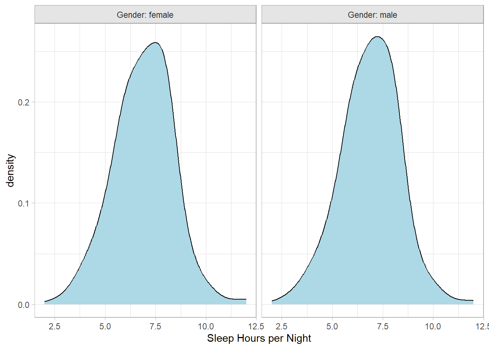
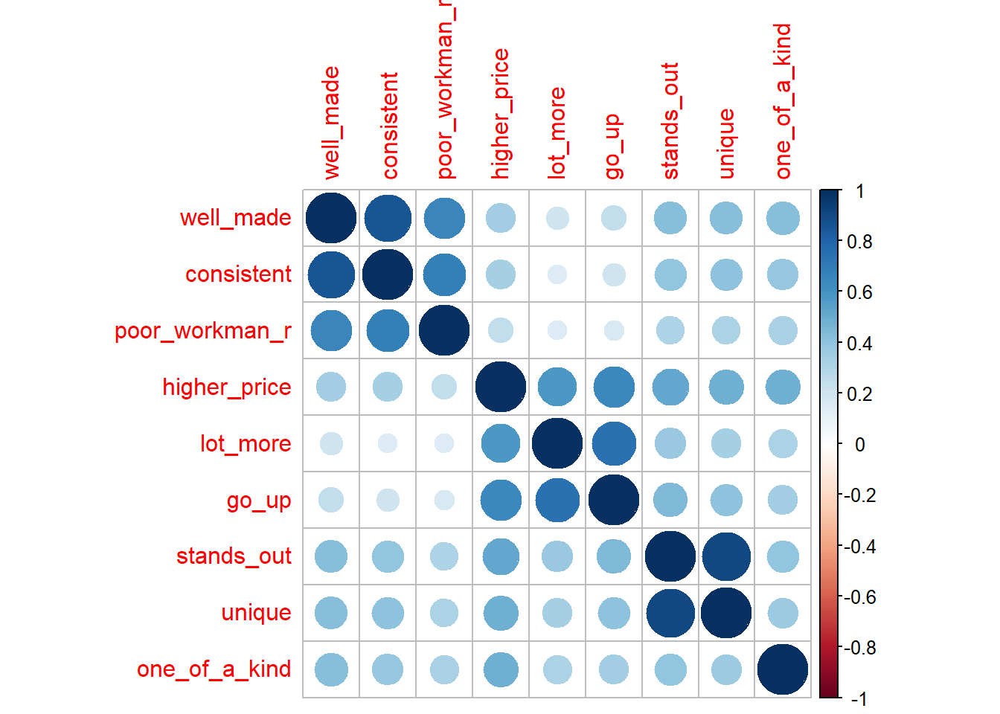
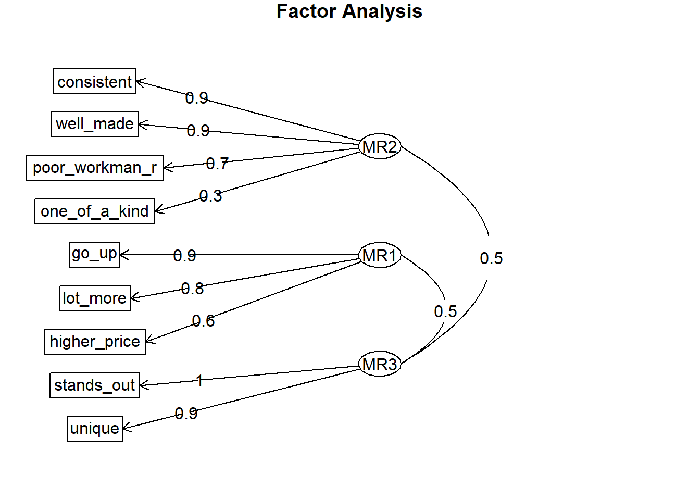

nrow(apisrs)
## [1] 200
apisrs %>% count(pw, fpc)
## pw fpc n
## 1 30.97 6194 2004 Analyzing Survey Data
This is a tutorial for using the survey package survey to analyze complex survey data. “Complex” surveys are those with stratification and/or clustering. The package handles weights, and adjusts statistical tests for the survey design.
4.1 Defining the Survey Design
Below are some examples defining the most common survey designs. The survey package includes the Student performance in California schools data set (api), a record of the Academic Performance Index based on standardized testing. api contains sub-data sets that illustrate the design types.
apisrsis a simple random sample of (n = 200) schools,apistratis stratified sample of 3 school types (elementary, middle, high) with simple random sampling of different sizes in each stratum,apiclus2is a two-stage cluster sample of schools within districts.
You create a survey design object with the svydesign(data, ...) function. There are parameter settings for each design type.
4.1.1 Simple Random Sample
A simple random sample has no clusters, so indicate this with ids = ~1. The response weights will always be the same, equaling the population size divided by the sample size. Typically, the response weight is identified in a column. There is another parameter called the finite population correction (fpc) that is used to reduce the variance when a substantial fraction of the total population has been sampled. Set fpc to the stratum population size. A simple random sample has no strata, so it will always be the same, equaling the population size.
For apisrs the population size is 6,194 (the number of schools in California). The sample size is 200, so the response weights all equal 6,194 / 200 = 30.97.
Here is the design object.
apisrs_design <- svydesign(
data = apisrs,
weights = ~pw,
fpc = ~fpc,
ids = ~1
)
summary(apisrs_design)
## Independent Sampling design
## svydesign(data = apisrs, weights = ~pw, fpc = ~fpc, ids = ~1)
## Probabilities:
## Min. 1st Qu. Median Mean 3rd Qu. Max.
## 0.03229 0.03229 0.03229 0.03229 0.03229 0.03229
## Population size (PSUs): 6194
## Data variables:
## [1] "cds" "stype" "name" "sname" "snum" "dname"
## [7] "dnum" "cname" "cnum" "flag" "pcttest" "api00"
## [13] "api99" "target" "growth" "sch.wide" "comp.imp" "both"
## [19] "awards" "meals" "ell" "yr.rnd" "mobility" "acs.k3"
## [25] "acs.46" "acs.core" "pct.resp" "not.hsg" "hsg" "some.col"
## [31] "col.grad" "grad.sch" "avg.ed" "full" "emer" "enroll"
## [37] "api.stu" "pw" "fpc"4.1.2 Stratified Sample
Define a stratified sample by specifying with the strata parameter. The schools in apistrat are stratified based on the school type E = Elementary, M = Middle, and H = High School. For each school type, a simple random sample of schools was taken: \(n_E\) = 100, \(n_M\) = 50, and \(n_H\) = 50. The 100 elementary schools represent 100 / 4,421 of the state’s elementary schools, so their weights = 44.21. Similarly, the weights are 50 / 1,018 = 20.36 for the middle schools, and 50 / 755 = 15.10 for the high schools.
apistrat %>%
count(stype, pw, fpc) %>%
mutate(`pw*n` = pw * n) %>%
adorn_totals(,,,, -pw) %>%
flextable() %>% colformat_num(j = 2, digits = 2) %>% colformat_int(j = c(3:5))stype | pw | fpc | n | pw*n |
|---|---|---|---|---|
E | 44.2099990844727 | 4,421 | 100 | 4,421 |
H | 15.1000003814697 | 755 | 50 | 755 |
M | 20.3600006103516 | 1,018 | 50 | 1,018 |
Total | - | 6,194 | 200 | 6,194 |
Here is the design object.
apistrat_design <- svydesign(
data = apistrat,
weights = ~pw,
fpc = ~fpc,
ids = ~1,
strata = ~stype
)
summary(apistrat_design)Stratified Independent Sampling design
svydesign(data = apistrat, weights = ~pw, fpc = ~fpc, ids = ~1,
strata = ~stype)
Probabilities:
Min. 1st Qu. Median Mean 3rd Qu. Max.
0.02262 0.02262 0.03587 0.04014 0.05339 0.06623
Stratum Sizes:
E H M
obs 100 50 50
design.PSU 100 50 50
actual.PSU 100 50 50
Population stratum sizes (PSUs):
E H M
4421 755 1018
Data variables:
[1] "cds" "stype" "name" "sname" "snum" "dname"
[7] "dnum" "cname" "cnum" "flag" "pcttest" "api00"
[13] "api99" "target" "growth" "sch.wide" "comp.imp" "both"
[19] "awards" "meals" "ell" "yr.rnd" "mobility" "acs.k3"
[25] "acs.46" "acs.core" "pct.resp" "not.hsg" "hsg" "some.col"
[31] "col.grad" "grad.sch" "avg.ed" "full" "emer" "enroll"
[37] "api.stu" "pw" "fpc" 4.1.3 Clustered
Define a clustered sample by specifying the the cluster ids from largest to smallest level. The schools in apiclus2 are clustered in two stages, first by the (fpc1 = 757) school districts and a random sample of (n = 40) school districts (dnum) were selected. Then a random sample of (n <= 5) schools (snum) were selected from the fpc2 schools in the selected school districts.
apiclus_design <- svydesign(
id = ~dnum + snum,
data = apiclus2,
weights = ~pw,
fpc = ~fpc1 + fpc2
)
summary(apiclus_design)2 - level Cluster Sampling design
With (40, 126) clusters.
svydesign(id = ~dnum + snum, data = apiclus2, weights = ~pw,
fpc = ~fpc1 + fpc2)
Probabilities:
Min. 1st Qu. Median Mean 3rd Qu. Max.
0.003669 0.037743 0.052840 0.042390 0.052840 0.052840
Population size (PSUs): 757
Data variables:
[1] "cds" "stype" "name" "sname" "snum" "dname"
[7] "dnum" "cname" "cnum" "flag" "pcttest" "api00"
[13] "api99" "target" "growth" "sch.wide" "comp.imp" "both"
[19] "awards" "meals" "ell" "yr.rnd" "mobility" "acs.k3"
[25] "acs.46" "acs.core" "pct.resp" "not.hsg" "hsg" "some.col"
[31] "col.grad" "grad.sch" "avg.ed" "full" "emer" "enroll"
[37] "api.stu" "pw" "fpc1" "fpc2" 4.1.4 Example: NHANES
Let’s create a complex survey design for the National Health and Nutrition Examination Survey (NHANES). The survey collected 78 attributes of (n = 20,293) persons.
data(NHANESraw, package = "NHANES")
NHANESraw <- NHANESraw %>%
mutate(WTMEC4YR = WTMEC2YR / 2) # correction to weightsThe survey used a 4-stage design: stage 0 stratified the US by geography and proportion of minority populations; stage 1 randomly selected counties within strata; stage 2 randomly seleted city blocks within counties; stage 3 randomly selected households within city blocks; and stage 4 randomly selected persons within households. When there are multiple levels of clusters like this, the convention is to assign the first cluster to ids. Set nest = TRUE because the cluster ids are nested within the strata (i.e., they are not unique).
NHANES_design <- svydesign(
data = NHANESraw,
strata = ~SDMVSTRA,
ids = ~SDMVPSU,
nest = TRUE,
weights = ~WTMEC4YR
)
summary(NHANES_design)Stratified 1 - level Cluster Sampling design (with replacement)
With (62) clusters.
svydesign(data = NHANESraw, strata = ~SDMVSTRA, ids = ~SDMVPSU,
nest = TRUE, weights = ~WTMEC4YR)
Probabilities:
Min. 1st Qu. Median Mean 3rd Qu. Max.
8.986e-06 5.664e-05 1.054e-04 Inf 1.721e-04 Inf
Stratum Sizes:
75 76 77 78 79 80 81 82 83 84 85 86 87 88 89 90 91
obs 803 785 823 829 696 751 696 724 713 683 592 946 598 647 251 862 998
design.PSU 2 2 2 2 2 2 2 2 2 2 2 3 2 2 2 3 3
actual.PSU 2 2 2 2 2 2 2 2 2 2 2 3 2 2 2 3 3
92 93 94 95 96 97 98 99 100 101 102 103
obs 875 602 688 722 676 608 708 682 700 715 624 296
design.PSU 3 2 2 2 2 2 2 2 2 2 2 2
actual.PSU 3 2 2 2 2 2 2 2 2 2 2 2
Data variables:
[1] "ID" "SurveyYr" "Gender" "Age"
[5] "AgeMonths" "Race1" "Race3" "Education"
[9] "MaritalStatus" "HHIncome" "HHIncomeMid" "Poverty"
[13] "HomeRooms" "HomeOwn" "Work" "Weight"
[17] "Length" "HeadCirc" "Height" "BMI"
[21] "BMICatUnder20yrs" "BMI_WHO" "Pulse" "BPSysAve"
[25] "BPDiaAve" "BPSys1" "BPDia1" "BPSys2"
[29] "BPDia2" "BPSys3" "BPDia3" "Testosterone"
[33] "DirectChol" "TotChol" "UrineVol1" "UrineFlow1"
[37] "UrineVol2" "UrineFlow2" "Diabetes" "DiabetesAge"
[41] "HealthGen" "DaysPhysHlthBad" "DaysMentHlthBad" "LittleInterest"
[45] "Depressed" "nPregnancies" "nBabies" "Age1stBaby"
[49] "SleepHrsNight" "SleepTrouble" "PhysActive" "PhysActiveDays"
[53] "TVHrsDay" "CompHrsDay" "TVHrsDayChild" "CompHrsDayChild"
[57] "Alcohol12PlusYr" "AlcoholDay" "AlcoholYear" "SmokeNow"
[61] "Smoke100" "SmokeAge" "Marijuana" "AgeFirstMarij"
[65] "RegularMarij" "AgeRegMarij" "HardDrugs" "SexEver"
[69] "SexAge" "SexNumPartnLife" "SexNumPartYear" "SameSex"
[73] "SexOrientation" "WTINT2YR" "WTMEC2YR" "SDMVPSU"
[77] "SDMVSTRA" "PregnantNow" "WTMEC4YR" Survey weights for minorities are typically lower to account for their large sample sizes relative to population representation. You can see how the weights sum to the sub-populations and the total population.
NHANESraw %>%
group_by(Race1) %>%
summarize(.groups = "drop",
`Sum(WTMEC4YR)` = sum(WTMEC4YR),
`Avg(WTMEC4YR)` = mean(WTMEC4YR),
n = n()) %>%
mutate(`Avg * n` = `Avg(WTMEC4YR)` * n) %>%
janitor::adorn_totals(where = "row") %>%
flextable::flextable() %>%
flextable::colformat_int(j = c(2:5))Race1 | Sum(WTMEC4YR) | Avg(WTMEC4YR) | n | Avg * n |
|---|---|---|---|---|
Black | 37,241,616 | 8,026.210 | 4,640 | 37,241,616 |
Hispanic | 18,951,150 | 8,579.063 | 2,209 | 18,951,150 |
Mexican | 30,719,158 | 8,215.875 | 3,739 | 30,719,158 |
White | 193,966,274 | 26,236.477 | 7,393 | 193,966,274 |
Other | 23,389,002 | 10,116.350 | 2,312 | 23,389,002 |
Total | 304,267,200 | 61,173.976 | 20,293 | 304,267,200 |
The survey package functions handle the survey designs and weights. The population figures from the table above could have been built with svytable().
svytable(~Race1, design = NHANES_design) %>%
as.data.frame() %>%
mutate(prop = Freq / sum(Freq) * 100) %>%
arrange(desc(prop)) %>%
adorn_totals() %>%
flextable() %>%
colformat_int(j = 2) %>%
colformat_num(j = 3, suffix = "%", digits = 0)Race1 | Freq | prop |
|---|---|---|
White | 193,966,274 | 63.748664% |
Black | 37,241,616 | 12.239773% |
Mexican | 30,719,158 | 10.096112% |
Other | 23,389,002 | 7.686994% |
Hispanic | 18,951,150 | 6.228456% |
Total | 304,267,200 | 100.000000% |
4.2 Exploring Categorical Items
Create a contingency table by including two variables in svytable(). Here is contingency table for self-reported health by depression expressed as a 100% stacked bar chart.
svytable(~Depressed + HealthGen, design = NHANES_design) %>%
data.frame() %>%
group_by(HealthGen) %>%
mutate(n_HealthGen = sum(Freq), Prop_Depressed = Freq / sum(Freq)) %>%
ggplot(aes(x = HealthGen, y = Prop_Depressed, fill = Depressed)) +
geom_col() +
coord_flip() +
theme_minimal() +
scale_fill_brewer()
Perform a chi-square test of independence on contingency tables using the svychisq() function. Here is a test ofthe null hypothesis that depression is independent of general health.
svychisq(~Depressed + HealthGen, design = NHANES_design, statistic = "Chisq")
Pearson's X^2: Rao & Scott adjustment
data: svychisq(~Depressed + HealthGen, design = NHANES_design, statistic = "Chisq")
X-squared = 1592.7, df = 8, p-value < 2.2e-16The chi-square test with Rao & Scott adjustment is evidently not a standard chi-square test. Maybe in how it factors in survey design? The test statistic is usually \(X^2 = \sum (O - E)^2 / E.\)
O <- svytable(~Depressed + HealthGen, design = NHANES_design) %>% as.matrix()
E <- sum(O) * prop.table(O, 1) * prop.table(O, 2)
(X2 <- sum((O - E)^2 / E))
## [1] 16025254
pchisq(X2, df = (nrow(O)-1) * (ncol(O) - 1), lower.tail = FALSE)
## [1] 0which is what chisq.test() does.
svytable(~Depressed + HealthGen, design = NHANES_design) %>%
as.matrix() %>%
chisq.test()
Pearson's Chi-squared test
data: .
X-squared = 16025254, df = 8, p-value < 2.2e-164.3 Exploring Quantitative Data
The svymean(), svytotal(), and svyquantile() functions summarize quantitative variables. To group by a factor variable, use svyby().
svyquantile(x = ~SleepHrsNight,
design = NHANES_design,
na.rm = TRUE,
quantiles = c(.01, .25, .50, .75, .99))$SleepHrsNight
quantile ci.2.5 ci.97.5 se
0.01 4 4 5 0.2457588
0.25 6 6 7 0.2457588
0.5 7 7 8 0.2457588
0.75 8 8 9 0.2457588
0.99 10 10 11 0.2457588
attr(,"hasci")
[1] TRUE
attr(,"class")
[1] "newsvyquantile"svymean(x = ~SleepHrsNight, design = NHANES_design, na.rm = TRUE) mean SE
SleepHrsNight 6.9292 0.0166svyby(formula = ~SleepHrsNight, by = ~Depressed, FUN = svymean,
design = NHANES_design, na.rm = TRUE, keep.names = FALSE) %>%
ggplot(aes(x = Depressed, y = SleepHrsNight,
ymin = SleepHrsNight - 2*se, ymax = SleepHrsNight + 2*se)) +
geom_col(fill = "lightblue") +
geom_errorbar(width = 0.5)You need raw data for the distribution plots, so be sure to weight the variables.
NHANESraw %>%
ggplot(aes(x = SleepHrsNight, weight = WTMEC4YR)) +
geom_histogram(binwidth = 1, fill = "lightblue", color = "#FFFFFF", na.rm = TRUE)
NHANESraw %>%
filter(!is.na(SleepHrsNight) & !is.na(Gender)) %>%
group_by(Gender) %>%
mutate(WTMEC4YR_std = WTMEC4YR / sum(WTMEC4YR)) %>%
ggplot(aes(x = SleepHrsNight, Weight = WTMEC4YR_std)) +
geom_density(bw = 0.6, fill = "lightblue") +
labs(x = "Sleep Hours per Night") +
facet_wrap(~Gender, labeller = "label_both")Warning: The following aesthetics were dropped during statistical transformation:
Weight.
ℹ This can happen when ggplot fails to infer the correct grouping structure in
the data.
ℹ Did you forget to specify a `group` aesthetic or to convert a numerical
variable into a factor?
The following aesthetics were dropped during statistical transformation:
Weight.
ℹ This can happen when ggplot fails to infer the correct grouping structure in
the data.
ℹ Did you forget to specify a `group` aesthetic or to convert a numerical
variable into a factor?
Test whether the population averages differ with a two-sample survey-weighted t-test. Use the svytest() function to incorporate the survey design.
svyttest(formula = SleepHrsNight ~ Gender, design = NHANES_design)Warning in summary.glm(g): observations with zero weight not used for
calculating dispersionWarning in summary.glm(glm.object): observations with zero weight not used for
calculating dispersion
Design-based t-test
data: SleepHrsNight ~ Gender
t = -3.4077, df = 32, p-value = 0.001785
alternative hypothesis: true difference in mean is not equal to 0
95 percent confidence interval:
-0.15506427 -0.03904047
sample estimates:
difference in mean
-0.09705237 4.4 Modeling Quantitative Data
Scatterplots need to adjust for the sampling weights. You can do this with the size or alpha aesthetics.
p1 <- NHANESraw %>%
filter(Age == 20) %>%
ggplot(aes(x = Height, y = Weight, color = Gender, size = WTMEC4YR)) +
geom_jitter(width = 0.3, height = 0, alpha = 0.3) +
guides(size = FALSE) +
theme(legend.position = "top") +
labs(color = "")Warning: The `<scale>` argument of `guides()` cannot be `FALSE`. Use "none" instead as
of ggplot2 3.3.4.p2 <- NHANESraw %>%
filter(Age == 20) %>%
ggplot(aes(x = Height, y = Weight, color = Gender, alpha = WTMEC4YR)) +
geom_jitter(width = 0.3, height = 0) +
guides(alpha = FALSE) +
theme(legend.position = "top") +
labs(color = "")
gridExtra::grid.arrange(p1, p2, nrow = 1)Warning: Removed 4 rows containing missing values or values outside the scale range
(`geom_point()`).Warning: Removed 4 rows containing missing values or values outside the scale range
(`geom_point()`).Fit a regression line with geom_smooth().
NHANESraw %>%
filter(!is.na(Weight) & !is.na(Height)) %>%
ggplot(aes(x = Height, y = Weight, size = WTMEC4YR)) +
geom_point(alpha = 0.1) +
geom_smooth(method = "lm", se = FALSE, mapping = aes(weight = WTMEC4YR),
formula = y ~ x, color = "blue") +
geom_smooth(method = "lm", se = FALSE, mapping = aes(weight = WTMEC4YR),
formula = y ~ poly(x, 2), color = "orange") +
geom_smooth(method = "lm", se = FALSE, mapping = aes(weight = WTMEC4YR),
formula = y ~ poly(x, 3), color = "red") +
guides(size = FALSE) Warning: Using `size` aesthetic for lines was deprecated in ggplot2 3.4.0.
ℹ Please use `linewidth` instead.Warning: The following aesthetics were dropped during statistical transformation: size.
ℹ This can happen when ggplot fails to infer the correct grouping structure in
the data.
ℹ Did you forget to specify a `group` aesthetic or to convert a numerical
variable into a factor?
The following aesthetics were dropped during statistical transformation: size.
ℹ This can happen when ggplot fails to infer the correct grouping structure in
the data.
ℹ Did you forget to specify a `group` aesthetic or to convert a numerical
variable into a factor?
The following aesthetics were dropped during statistical transformation: size.
ℹ This can happen when ggplot fails to infer the correct grouping structure in
the data.
ℹ Did you forget to specify a `group` aesthetic or to convert a numerical
variable into a factor?
Model a regression line with svyglm(). Let’s build a model to predict, BPSysAve, a person’s systolic blood pressure reading, using BPDiaAve, a person’s diastolic blood pressure reading and Diabetes, whether or not they were diagnosed with diabetes.
drop_na(NHANESraw, Diabetes, BPDiaAve, BPSysAve) %>%
ggplot(mapping = aes(x = BPDiaAve, y = BPSysAve, size = WTMEC4YR, color = Diabetes)) +
geom_point(alpha = 0.2) +
guides(size = FALSE) +
geom_smooth(method = "lm", formula = y ~ x, se = FALSE, mapping = aes(weight = WTMEC4YR))Warning: The following aesthetics were dropped during statistical transformation: size.
ℹ This can happen when ggplot fails to infer the correct grouping structure in
the data.
ℹ Did you forget to specify a `group` aesthetic or to convert a numerical
variable into a factor?
mod <- svyglm(BPSysAve ~ BPDiaAve*Diabetes, design = NHANES_design)
summary(mod)
Call:
svyglm(formula = BPSysAve ~ BPDiaAve * Diabetes, design = NHANES_design)
Survey design:
svydesign(data = NHANESraw, strata = ~SDMVSTRA, ids = ~SDMVPSU,
nest = TRUE, weights = ~WTMEC4YR)
Coefficients:
Estimate Std. Error t value Pr(>|t|)
(Intercept) 83.58652 2.05537 40.667 < 2e-16 ***
BPDiaAve 0.49964 0.02623 19.047 < 2e-16 ***
DiabetesYes 25.36616 3.56587 7.114 6.53e-08 ***
BPDiaAve:DiabetesYes -0.22132 0.05120 -4.323 0.000156 ***
---
Signif. codes: 0 '***' 0.001 '**' 0.01 '*' 0.05 '.' 0.1 ' ' 1
(Dispersion parameter for gaussian family taken to be 279.1637)
Number of Fisher Scoring iterations: 24.5 Survey Administration
4.5.1 Instrument: Validity and Reliability
4.5.2 Data Collection
The second phase of a survey analysis is to collect the responses and perform an exploratory data analysis to familiarize yourself with the data.
4.5.3 Frequencies
brand_rep is a brand reputation survey of n = 599 respondents answering nine 5-point Likert-scale items. The responses come in as numeric, and you will want to leave them that way for most analyses.
brand_rep <- read_csv(url("https://assets.datacamp.com/production/repositories/4494/datasets/59b5f2d717ddd647415d8c88aa40af6f89ed24df/brandrep-cleansurvey-extraitem.csv"))
psych::response.frequencies(brand_rep) 1 2 3 4 5 miss
well_made 0.6493739 0.2665474 0.04830054 0.014311270 0.02146691 0
consistent 0.6779964 0.2343470 0.04651163 0.019677996 0.02146691 0
poor_workman_r 0.7584973 0.1699463 0.04472272 0.007155635 0.01967800 0
higher_price 0.3130590 0.2593918 0.18425760 0.119856887 0.12343470 0
lot_more 0.1484794 0.1735242 0.15563506 0.162790698 0.35957066 0
go_up 0.1842576 0.1824687 0.19677996 0.177101968 0.25939177 0
stands_out 0.4275492 0.3041145 0.13953488 0.067978533 0.06082290 0
unique 0.4579606 0.2933810 0.11985689 0.069767442 0.05903399 0
one_of_a_kind 0.6225403 0.1949911 0.08944544 0.023255814 0.06976744 0Summarize Likert response with the likert::likert() function. This is the one place where you will need the items to be treated as factors.
brand_rep %>%
data.frame() %>% # read_csv() returns a tibble
mutate(across(everything(), as.factor)) %>% # likert() uses factors
likert::likert() %>%
plot() +
labs(title = "Brand Reputation Survey") +
theme(legend.position = "top")Missing values may mean respondents did not understand the question or did not want to reveal their answer. If <5% of survey responses have no missing values, you can just drop those responses. If missing values are a problem, try the Hmisc::naclus() to see which items tend to be missing in the same record. This survey is clean.
nrow(brand_rep) - nrow(na.omit(brand_rep)) # num cases
## [1] 0
colSums(is.na(brand_rep)) # num cases by col
## well_made consistent poor_workman_r higher_price lot_more
## 0 0 0 0 0
## go_up stands_out unique one_of_a_kind
## 0 0 0 04.5.4 Correlations
You will want to identify items that correlate highly with each other, but not highly outside their group. These patterns are the basis of mapping factors to the latent variables. Factors are the concrete survey items; latent variables are the abstract concepts they are intended to supply, like brand loyalty or customer satisfaction. The correlation plot below appears to have 3 groups, plus a stand-alone variable (one_of_a_kind).
#psych::corr.test(brand_rep)
corrplot::corrplot(cor(brand_rep), method = "circle")
4.6 Item Reduction
The third phase, explores the mapping of the factors (aka “manifest variables”) to the latent variable’s “dimensions” and refines the survey to exclude factors that do not map to a dimension. A latent variable may have several dimensions. E.g., “brand loyalty” may consist of “brand identification”, “perceived value”, and “brand trust”. Exploratory factor analysis (EFA), identifies the dimensions in the data, and whether any items do not reveal information about the latent variable. EFA establishes the internal reliability, whether similar items produce similar scores.
Start with a parallel analysis and scree plot. This will suggest the number of factors in the data. Use this number as the input to an exploratory factor analysis.
4.6.1 Parallel Analysis
A scree plot is a line plot of the eigenvalues. An eigenvalue is the proportion of variance explained by each factor. Only factors with eigenvalues greater than those from uncorrelated data are useful. You want to find a sharp reduction in the size of the eigenvalues (like a cliff), with the rest of the smaller eigenvalues constituting rubble (scree!). After the eigenvalues drop dramatically in size, additional factors add relatively little to the information already extracted.
Parallel analysis helps to make the interpretation of scree plots more objective. The eigenvalues are plotted along with eigenvalues of simulated variables with population correlations of 0. The number of eigenvalues above the point where the two lines intersect is the suggested number of factors. The rationale for parallel analysis is that useful factors account for more variance than could be expected by chance.
psych::fa.parallel() compares a scree of your data set to a random data set to identify the number of factors. The elbow below here is at 3 factors.
psych::fa.parallel(brand_rep)
Parallel analysis suggests that the number of factors = 3 and the number of components = 2 4.6.2 Exporatory Factor Analysis
Use psych::fa() to perform the factor analysis with your chosen number of factors. The number of factors may be the result of your parallel analysis, or the opinion of the SMEs. In this case, we’ll go with the 3 factors identified by the parallel analysis.
brand_rep_efa <- psych::fa(brand_rep, nfactors = 3)Loading required namespace: GPArotation# psych::scree(brand_rep) # psych makes scree plot's too.
psych::fa.diagram(brand_rep_efa)
Using EFA, you may tweak the number of factors or drop poorly-loading items. Each item should load highly to one and only one dimension. This one dimension is the item’s primary loading. Generally, a primary loading > .7 is excellent, >.6 is very good, >.5 is good, >.4 is fair, and <.4 is poor. Here are the factor loadings from the 3 factor model.
brand_rep_efa$loadings
Loadings:
MR2 MR1 MR3
well_made 0.896
consistent 0.947
poor_workman_r 0.739
higher_price 0.127 0.632 0.149
lot_more 0.850
go_up 0.896
stands_out 1.008
unique 0.896
one_of_a_kind 0.309 0.295 0.115
MR2 MR1 MR3
SS loadings 2.361 2.012 1.858
Proportion Var 0.262 0.224 0.206
Cumulative Var 0.262 0.486 0.692The brand-rep survey items load to 3 factors well except for the one_of_a_kind item. Its primary factor loading (0.309) is poor. The others are either very good (.6-.7) and excellent (>.7) range.
Look at the model eigenvalues. There should be one eigenvalue per dimension. Eigenvalues a little less than one may be contaminating the model.
brand_rep_efa$e.value[1] 4.35629549 1.75381015 0.98701607 0.67377072 0.39901205 0.35865598 0.23915591
[8] 0.14238807 0.08989556Look at the factor score correlations. They should all be around 0.6. Much smaller means they are not describing the same latent variable. Much larger means they are describing the same dimension of the latent variable.
brand_rep_efa$r.scores [,1] [,2] [,3]
[1,] 1.0000000 0.3147485 0.4778759
[2,] 0.3147485 1.0000000 0.5428218
[3,] 0.4778759 0.5428218 1.0000000If you have a poorly loaded dimension, drop factors one at a time from the scale. one_of_a_kind loads across all three factors, but does not load strongly onto any one factor. one_of_a_kind is not clearly measuring any dimension of the latent variable. Drop it and try again.
brand_rep_efa <- psych::fa(brand_rep %>% select(-one_of_a_kind), nfactors = 3)
brand_rep_efa$loadings
Loadings:
MR2 MR3 MR1
well_made 0.887
consistent 0.958
poor_workman_r 0.735
higher_price 0.120 0.596 0.170
lot_more 0.845
go_up 0.918
stands_out 0.990
unique 0.916
MR2 MR3 MR1
SS loadings 2.261 1.915 1.850
Proportion Var 0.283 0.239 0.231
Cumulative Var 0.283 0.522 0.753brand_rep_efa$e.value[1] 4.00884429 1.75380537 0.97785883 0.42232527 0.36214534 0.24086772 0.14404264
[8] 0.09011054brand_rep_efa$r.scores [,1] [,2] [,3]
[1,] 1.0000000 0.2978009 0.4802138
[2,] 0.2978009 1.0000000 0.5351654
[3,] 0.4802138 0.5351654 1.0000000This is better. We have three dimensions of brand reputation:
- items
well_made,consistent, andpoor_workman_rdescribe Product Quality, - items
higher_price,lot_more, andgo_updescribe Willingness to Pay, and - items
stands_outanduniquedescribe Product Differentiation
Even if the data and your theory suggest otherwise, explore what happens when you include more or fewer factors in your EFA.
psych::fa(brand_rep, nfactors = 2)$loadings
Loadings:
MR1 MR2
well_made 0.884
consistent 0.932
poor_workman_r 0.728
higher_price 0.745
lot_more 0.784 -0.131
go_up 0.855 -0.103
stands_out 0.591 0.286
unique 0.540 0.307
one_of_a_kind 0.378 0.305
MR1 MR2
SS loadings 2.688 2.485
Proportion Var 0.299 0.276
Cumulative Var 0.299 0.575psych::fa(brand_rep, nfactors = 4)$loadings
Loadings:
MR2 MR1 MR3 MR4
well_made 0.879
consistent 0.964
poor_workman_r 0.732
higher_price 0.552 0.150 0.168
lot_more 0.835
go_up 0.929
stands_out 0.976
unique 0.932
one_of_a_kind 0.999
MR2 MR1 MR3 MR4
SS loadings 2.244 1.866 1.846 1.029
Proportion Var 0.249 0.207 0.205 0.114
Cumulative Var 0.249 0.457 0.662 0.776The two-factor loading worked okay. The 4 factor loading only loaded one variable to the fourth factor. In this example the SME expected a three-factor model and the data did not contradict the theory, so stick with three.
Whereas the item generation phase tested for item equivalence, the EFA phase tests for internal reliability (consistency) of items. Internal reliability means the survey produces consistent results. The more common statistics for assessing internal reliability are Cronbach’s Alpha, and split-half.
4.6.3 Cronbach’s Alpha
In general, an alpha <.6 is unacceptable, <.65 is undesirable, <.7 is minimally acceptable, <.8 is respectable, <.9 is very good, and >=.9 suggests items are too alike. A very low alpha means items may not be measuring the same construct, so you should drop items. A very high alpha means items are multicollinear, and you should drop items. Here is Cronbach’s alpha for the brand reputation survey, after removing the poorly-loading one_of_a_kind variable.
psych::alpha(brand_rep[, 1:8])$total$std.alpha[1] 0.8557356This value is in the “very good” range. Cronbach’s alpha is often used to measure the reliability of a single dimension. Here are the values for the 3 dimensions.
psych::alpha(brand_rep[, 1:3])$total$std # Product Quality
## [1] 0.8918025
psych::alpha(brand_rep[, 4:6])$total$std # Willingness to Pay
## [1] 0.8517566
psych::alpha(brand_rep[, 7:8])$total$std # Product Differentiation
## [1] 0.951472Alpha is >0.7 for each dimension. Sometimes the alpha for our survey as a whole is greater than that of the dimensions. This can happen because Cronbach’s alpha is sensitive to the number of items. Over-inflation of the alpha statistic can be a concern when working with surveys containing a large number of items.
4.6.4 Split-Half
Use psych::splitHalf() to split the survey in half and test whether all parts of the survey contribute equally to measurement. This method is much less popular than Cronbach’s alpha.
psych::splitHalf(brand_rep[, 1:8])Split half reliabilities
Call: psych::splitHalf(r = brand_rep[, 1:8])
Maximum split half reliability (lambda 4) = 0.93
Guttman lambda 6 = 0.92
Average split half reliability = 0.86
Guttman lambda 3 (alpha) = 0.86
Guttman lambda 2 = 0.87
Minimum split half reliability (beta) = 0.66
Average interitem r = 0.43 with median = 0.44.7 Confirmatory Factor Analysis
Whereas EFA is used to develop a theory of the number of factors needed to explain the relationships among the survey items, confirmatory factor analysis (CFA) is a formal hypothesis test of the EFA theory. CFA measures construct validity, that is, whether you are really measuring what you claim to measure.
These notes explain how to use CFA, but do not explain the theory. For that you need to learn about dimensionality reduction, and structural equation modeling.
Use the lavaan package (latent variable analysis package), passing in the model definition. Here is the model for the three dimensions in the brand reputation survey. Lavaan’s default estimator is maximum likelihood, which assumes normality. You can change it to MLR which uses robust standard errors to mitigate non-normality. The summary prints a ton of output. Concentrate on the lambda - the factor loadings.
brand_rep_mdl <- paste(
"PrdQl =~ well_made + consistent + poor_workman_r",
"WillPay =~ higher_price + lot_more + go_up",
"PrdDff =~ stands_out + unique",
sep = "\n"
)
brand_rep_cfa <- lavaan::cfa(model = brand_rep_mdl, data = brand_rep[, 1:8], estimator = "MLR")
# lavaan::summary(brand_rep_cfa, fit.measures = TRUE, standardized = TRUE)
semPlot::semPaths(brand_rep_cfa, rotation = 4)Registered S3 method overwritten by 'kutils':
method from
print.likert likert
lavaan::inspect(brand_rep_cfa, "std")$lambda PrdQl WillPy PrdDff
well_made 0.914 0.000 0.000
consistent 0.932 0.000 0.000
poor_workman_r 0.730 0.000 0.000
higher_price 0.000 0.733 0.000
lot_more 0.000 0.812 0.000
go_up 0.000 0.902 0.000
stands_out 0.000 0.000 0.976
unique 0.000 0.000 0.930The CFA hypothesis test is a chi-square test, so is sensitive to normality assumptions and n-size. Other fit measure are reported too: * Comparative Fit Index (CFI) (look for value >.9) * Tucker-Lewis Index (TLI) (look for value >.9) * Root mean squared Error of Approximation (RMSEA) (look for value <.05)
There are actually 78 fit measures to choose from! Focus on CFI and TLI.
lavaan::fitMeasures(brand_rep_cfa, fit.measures = c("cfi", "tli")) cfi tli
0.980 0.967 This output indicates a good model because both measures are >.9. Check the standardized estimates for each item. The standardized factor loadings are the basis of establishing construct validity. While we call these measures ‘loadings,’ they are better described as correlations of each manifest item with the dimensions. As you calculated, the difference between a perfect correlation and the observed is considered ‘error.’ This relationship between the so-called ‘true’ and ‘observed’ scores is the basis of classical test theory.
lavaan::standardizedSolution(brand_rep_cfa) %>%
filter(op == "=~") %>%
select(lhs, rhs, est.std, pvalue) lhs rhs est.std pvalue
1 PrdQl well_made 0.914 0
2 PrdQl consistent 0.932 0
3 PrdQl poor_workman_r 0.730 0
4 WillPay higher_price 0.733 0
5 WillPay lot_more 0.812 0
6 WillPay go_up 0.902 0
7 PrdDff stands_out 0.976 0
8 PrdDff unique 0.930 0If you have a survey that meets your assumptions, performs well under EFA, but fails under CFA, return to your survey and revisit your scale, examine the CFA modification indices, factor variances, etc.
4.8 Convergent/Discriminant Validity
Construct validity means the survey measures what it intends to measure. It is composed of convergent validity and discriminant validity. Convergent validity means factors address the same concept. Discriminant validity means factors address different aspects of the concept.
Test for construct validity after assessing CFA model strength (with CFI, TFI, and RMSEA) – a poor-fitting model may have greater construct validity than a better-fitting model. Use the semTools::reliability() function. The average variance extracted (AVE) measures convergent validity (avevar) and should be > .5. The composite reliability (CR) measures discriminant validity (omega) and should be > .7.
semTools::reliability(brand_rep_cfa) PrdQl WillPay PrdDff
alpha 0.8926349 0.8521873 0.9514719
omega 0.9017514 0.8605751 0.9520117
omega2 0.9017514 0.8605751 0.9520117
omega3 0.9019287 0.8646975 0.9520114
avevar 0.7573092 0.6756174 0.9084654These values look good for all three dimensions. As an aside, alpha is Cronbach’s alpha. Do not be tempted to test reliability and validity in the same step. Start with reliability because it is a necessary but insufficient condition for validity. By checking for internal consistency first, as measured by alpha, then construct validity, as measured by AVE and CR, you establish the necessary reliability of the scale as a whole was met, then took it to the next level by checking for construct validity among the unique dimensions.
At this point you have established that the latent and manifest variables are related as hypothesized, and that the survey measures what you intended to measure, in this case, brand reputation.
4.9 Replication
The replication phase establishes criterion validity and stability (reliability). Criterion validity is a measure of the relationship between the construct and some external measure of interest. Measure criterion validity with concurrent validity, how well items correlate with an external metric measured at the same time, and with predictive validity, how well an item predicts an external metric. Stability means the survey produces similar results over repeated test-retest administrations.
4.9.1 Criterion Validity
4.9.1.1 Concurrent Validity
Concurrent validity is a measure of whether our latent construct is significantly correlated to some outcome measured at the same time.
Suppose you have an additional data set of consumer spending on the brand. The consumer’s perception of the brand should correlate with their spending. Before checking for concurrent validity, standardize the data so that likert and other variable types are on the same scale.
set.seed(20201004)
brand_rep <- brand_rep %>%
mutate(spend = ((well_made + consistent + poor_workman_r)/3 * 5 +
(higher_price + lot_more + go_up)/3 * 3 +
(stands_out + unique)/2 * 2) / 10)
brand_rep$spend <- brand_rep$spend + rnorm(559, 5, 4) # add randomness
brand_rep_scaled <- scale(brand_rep)Do respondents with higher scores on our the brand reputation scale also tend to spend more at the store? Build model, and latentize spend as Spndng and model with the ~~ operator. Fit the model with the semTools::sem() function.
brand_rep_cv_mdl <- paste(
"PrdQl =~ well_made + consistent + poor_workman_r",
"WillPay =~ higher_price + lot_more + go_up",
"PrdDff =~ stands_out + unique",
"Spndng =~ spend",
"Spndng ~~ PrdQl + WillPay + PrdDff",
sep = "\n"
)
brand_rep_cv <- lavaan::sem(data = brand_rep_scaled, model = brand_rep_cv_mdl)Here are the standardized covariances. Because the data is standardized, interpret these as correlations. The p-vales are not significant because the spending data was random.
lavaan::standardizedSolution(brand_rep_cv) %>%
filter(rhs == "Spndng") %>%
select(-op, -rhs) lhs est.std se z pvalue ci.lower ci.upper
1 PrdQl 0.174 0.043 4.092 0 0.091 0.258
2 WillPay 0.241 0.043 5.654 0 0.157 0.324
3 PrdDff 0.198 0.041 4.779 0 0.117 0.279
4 Spndng 1.000 0.000 NA NA 1.000 1.000semPlot::semPaths(brand_rep_cv, whatLabels = "est.std", edge.label.cex = .8, rotation = 2)Each dimension of brand reputation is positively correlated to spending history and the relationships are all significant.
4.9.1.2 Predictive Validity
Predictive validity is established by regressing some future outcome on your established construct. Assess predictive validity just as you would with any linear regression – regression estimates and p-values (starndardizedSolution()), and the r-squared coefficient of determination inspect().
Build a regression model with the single ~ operator. Then fit the model to the data as before.
brand_rep_pv_mdl <- paste(
"PrdQl =~ well_made + consistent + poor_workman_r",
"WillPay =~ higher_price + lot_more + go_up",
"PrdDff =~ stands_out + unique",
"spend ~ PrdQl + WillPay + PrdDff",
sep = "\n"
)
brand_rep_pv <- lavaan::sem(data = brand_rep_scaled, model = brand_rep_pv_mdl)
#lavaan::summary(brand_rep_pv, standardized = T, fit.measures = T, rsquare = T)
semPlot::semPaths(brand_rep_pv, whatLabels = "est.std", edge.label.cex = .8, rotation = 2)
lavaan::standardizedSolution(brand_rep_pv) %>%
filter(op == "~") %>%
mutate_if(is.numeric, round, digits = 3) lhs op rhs est.std se z pvalue ci.lower ci.upper
1 spend ~ PrdQl 0.094 0.048 1.949 0.051 -0.001 0.189
2 spend ~ WillPay 0.182 0.052 3.486 0.000 0.080 0.284
3 spend ~ PrdDff 0.060 0.055 1.092 0.275 -0.047 0.167lavaan::inspect(brand_rep_pv, "r2") well_made consistent poor_workman_r higher_price lot_more
0.837 0.867 0.533 0.537 0.658
go_up stands_out unique spend
0.816 0.951 0.866 0.072 There is a statistically significant relationship between one dimension of brand quality (Willingness to Pay) and spending. At this point you may want to drop the other two dimensions. However, the R^2 is not good - only 7% of the variability in Spending can be explained by the three dimension of our construct.
Factor scores represent individual respondents’ standing on a latent factor. While not used for scale validation per se, factor scores can be used for customer segmentation via clustering, network analysis and other statistical techniques.
brand_rep_cfa <- lavaan::cfa(brand_rep_pv_mdl, data = brand_rep_scaled)
brand_rep_cfa_scores <- lavaan::predict(brand_rep_cfa) %>% as.data.frame()
psych::describe(brand_rep_cfa_scores) vars n mean sd median trimmed mad min max range skew kurtosis
PrdQl 1 559 0 0.88 -0.50 -0.19 0.09 -0.57 4.02 4.59 2.31 6.18
WillPay 2 559 0 0.69 0.00 0.01 0.86 -1.15 1.16 2.31 -0.05 -1.18
PrdDff 3 559 0 0.96 -0.04 -0.15 1.17 -0.88 2.54 3.41 1.09 0.35
se
PrdQl 0.04
WillPay 0.03
PrdDff 0.04psych::multi.hist(brand_rep_cfa_scores)map(brand_rep_cfa_scores, shapiro.test)$PrdQl
Shapiro-Wilk normality test
data: .x[[i]]
W = 0.66986, p-value < 2.2e-16
$WillPay
Shapiro-Wilk normality test
data: .x[[i]]
W = 0.94986, p-value = 7.811e-13
$PrdDff
Shapiro-Wilk normality test
data: .x[[i]]
W = 0.82818, p-value < 2.2e-16These scores are not normally distributed, which makes clustering a great choice for modeling factor scores. Clustering does not mean distance-based clustering, such as K-means, in this context. Mixture models consider data as coming from a distribution which itself is a mixture of clusters. To learn more about model-based clustering in the Hierarchical and Mixed Effects Models DataCamp course.
Factor scores can be extracted from a structural equation model and used as inputs in other models. For example, you can use the factor scores from the brand reputation dimensions as regressors for a regrssion on spending.
brand_rep_fs_reg_dat <- bind_cols(brand_rep_cfa_scores, spend = brand_rep$spend)
brand_rep_fs_reg <- lm(spend ~ PrdQl + WillPay + PrdDff, data = brand_rep_fs_reg_dat)
summary(brand_rep_fs_reg)$coef Estimate Std. Error t value Pr(>|t|)
(Intercept) 7.1555354 0.1591195 44.9695738 3.363705e-187
PrdQl 0.4260875 0.2062002 2.0663774 3.925620e-02
WillPay 1.1365087 0.2805960 4.0503388 5.842799e-05
PrdDff 0.1714031 0.2181813 0.7855993 4.324375e-01The coefficients and r-squared of the lm() and sem() models closely resemble each other, but keeping the regression inside the lavaan framework provides more information (as witnessed in the higher estimates and r-squared). A construct, once validated, can be combined with a wide range of outcomes and models to produce valuable information about consumer behavior and habits.
4.9.2 Test-Retest Reliability
Test-retest reliability is the ability to achieve the same result from a respondent at two closely-spaced points in time (repeated measures).
Suppose you had two surveys, identified by an id field.
# svy_1 <- brand_rep[sample(1:559, 300),] %>% as.data.frame()
# svy_2 <- brand_rep[sample(1:559, 300),] %>% as.data.frame()
# survey_test_retest <- psych::testRetest(t1 = svy_1, t2 = svy_2, id = "id")
# survey_test_retest$r12An r^2 <.7 is unacceptable, <.9 good, and >.9 very good. This one is unacceptable.
One way to check for replication is by splitting the data in half.
# svy <- bind_rows(svy_1, svy_2, .id = "time")
#
# psych::describeBy(svy, "time")
#
# brand_rep_test_retest <- psych::testRetest(
# t1 = filter(svy, time == 1),
# t2 = filter(svy, time == 2),
# id = "id")
#
# brand_rep_test_retest$r12If the correlation of scaled scores across time 1 and time 2 is greater than .9, that indicates very strong test-retest reliability. This measure can be difficult to collect because it requires the same respondents to answer the survey at two points in time. However, it’s a good technique to have in your survey development toolkit.
When validating a scale, it’s a good idea to split the survey results into two samples, using one for EFA and one for CFA. This works as a sort of cross-validation such that the overall fit of the model is less likely due to chance of any one sample’s makeup.
# brand_rep_efa_data <- brand_rep[1:280,]
# brand_rep_cfa_data <- brand_rep[281:559,]
#
# efa <- psych::fa(brand_rep_efa_data, nfactors = 3)
# efa$loadings
#
# brand_rep_cfa <- lavaan::cfa(brand_rep_mdl, data = brand_rep_cfa_data)
# lavaan::inspect(brand_rep_cfa, what = "call")
#
# lavaan::fitmeasures(brand_rep_cfa)[c("cfi","tli","rmsea")]4.10 Reporting
There are seven key areas to report:
- Explain the study objective, explicitly identifying the research question.
- Motivate the research in the context of previous work.
- Explain the method and rationale, including the instrument and its psychometric properties, it development/testing, sample selection, and data collection. Explain and justify the analytical methods.
- Present the results in a concise and factual manner.
- Interpret and discuss the findings.
- Draw conclusions.